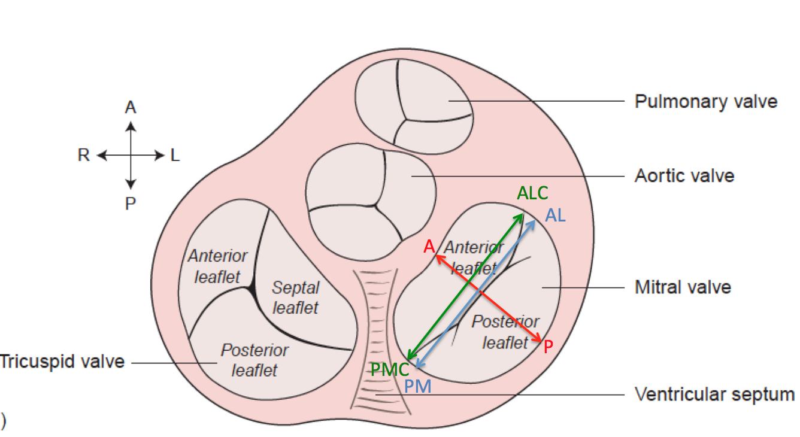

Points:
- A=Anterior (adjacent to aorta in normal valve)
- P=Posterior (mid-posterior leaflet)
- AL=Widest point anterolateral
- PM=Posteromedial
- PMC=Posteromedial commissure (based on leaflets)
- ALC=Anterolateral commissure (based on leaflets)
Distances:
- A-P=Anterior-Posterior Distance
- AL-PM=Anterolateral to Posteromedial distance
- PMC-ALC=Commissural width